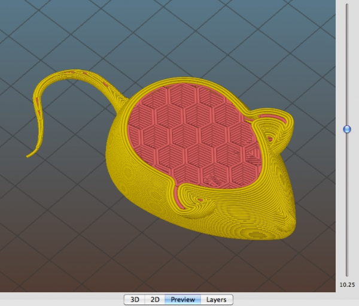
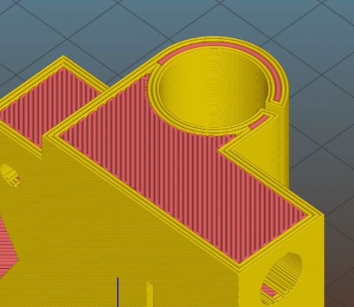

Release notes for 1.2.6 (2015-01-31)
More bugfixes. We want to make 1.2.x stable soon.
For the whole list of changes and new features see the release notes for 1.2.0, 1.2.1, 1.2.2, 1.2.3 and 1.2.5.
New features:
- New super-cool 3D preview for toolpaths!
- New option for Z distance between object and support material
- New option for custom G-code to be executed before each layer change (#2602)
- New option for customizing overlap between infill and perimeters (#2459)
- New “Set copies…” command in the objects contextual menu (#2540)
Improvements:
- Support OctoPrint instances not running on port 80 (#2530)
- Object parts can be selected also by clicking in the 3D scene
- Empty STL files are handled gracefully (#2557)
- Bed Shape configuration is available in Simple Mode too (#2574)
- Last selected page is remembered when switching Printer Settings profiles (#2568)
- Small artifacts in the STL file are removed so that they don’t propagate in perimeters (#2561 #2416)
Changes:
- Some default values were changed.
Bugfix:
- Fixed random crashes on Windows caused by a bug in an upstream library (#2517)
- Fixed OctoPrint Test button not working correctly (#2526)
- Fixed handling of presets with Unicode characters in filename (#2527)
- Fixed Ooze prevention leaving extruders inside the skirt sometimes (#2103)
- Fixed sequential printing performing the downwards move in the wrong spot sometimes (#2524)
- Fixed rectilnear support material not being correctly aligned across layers (#2566)
- Fixed random loss of infill in rare circumstances (#2539)
- Fixed an issue when loading AMF files produced with older Slic3r versions that used per-material config options (#2522)
- Fixed minor issue when dealing with files having empty layer at bottom (#2553)
- Fixed crach occuring when skirts > 0 but skirt_height = 0 (#2537)
- Fixed SVG export not centering viewport around objects (#2601)
- Fixed output of –help containing wrong defaults for a couple options (#2541)
- Fixed regression in Seam position = aligned (#2604)
- Display size is checked before trying to restore last saved window position (#2600)

